Рутинные операции ИП (ежемесячно) с использованием wfirma.pl¶
Данный документ описывает типичные операции ИП-шника на ryczałt в программе wfirma.pl. Минимальная настройка wfirma описана здесь.
Выставление фактур¶
В последний день месяца (если у вас с заказчиком договоренность на помесячную оплату), или по факту выполнения (отгрузки) работ необходимо сгенерировать и выставить фактуру заказчику.
- Идем на стартовую страницу.
- Нажимаем Wystaw fakturę (Выставить фактуру).
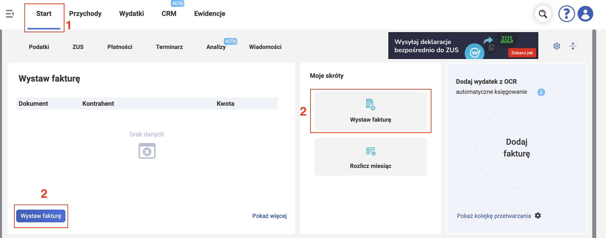
Также это можно сделать на странице Przychody - Sprzedaż. Откроется окошко Wystawianie faktury.
Podstawowe informacje¶
(Основная информация)
- Выбираем контрагента, которому выставляем фактуру (из выпадающего списка Nabywca). Адрес и номер NIP или VAT UE подтянутся автоматически из каталога.
- Data wystawienia - дата выставления фактуры. "Сегодня" либо дату в прошлом.
-
Data sprzedaży - дата продажи, aka дата оказания услуги (последний день месяца либо фактическую дату оказания услуги, если они нерегулярны).
Непрерывные услуги могут оплачиваться в установленные заранее расчётные периоды, такие как месяц или квартал – в таком случае датой возникновения дохода считается последний день расчётного периода, указанного в договоре или на выставленной фактуре, но не реже одного раза в год.
📚 Источник: пункт 1e из Art. 14.
-
Termin płatności - выбираем срок оплаты, если необходимо. Считается от дня выставления фактуры.
- Metoda płatności - выбираем метод оплаты. Заполняется автоматически при выборе контрагента из формы контрагента.
- Выбираем продукт (Produkt). В нашем случае - услугу. Остальные данные заполнятся автоматически из каталога продуктов (либо введите вручную).
- Цена нетто (Cena netto на фактуре с VAT) или просто цена (Cena на фактуре без VAT).
- (для рычалта) Налоговая ставка, соответствующая коду PKWiU оказанной услуги.
-
Если экспортируете услугу для юрлица (компании) с офисом в ЕС или за пределами ЕС (т.е. не в Польшу и не физлицу), то на инвойсе обязательно должна быть пометка:
Do rozliczenia podatku VAT zobowiązany jest nabywca usługi (odwrotne obciążenie). Reverse charge - VAT is charged to the buyer.
или просто:
"Odwrotne obciążenie / Reverse charge".
Более подробное объяснение см. на странице, посвящённой VAT. wFirma добавляет эту пометку автоматически, если выбрать правильный Schemat księgowy (об этом написано дальше в статье).
-
Rabat - теоретически в этом поле можно указать скидку.
- Хотите указать несколько услуг в одной фактуре? Нажмите кнопку "Nowy wiersz" - появится новая строка. Повторите шаги 6-10.
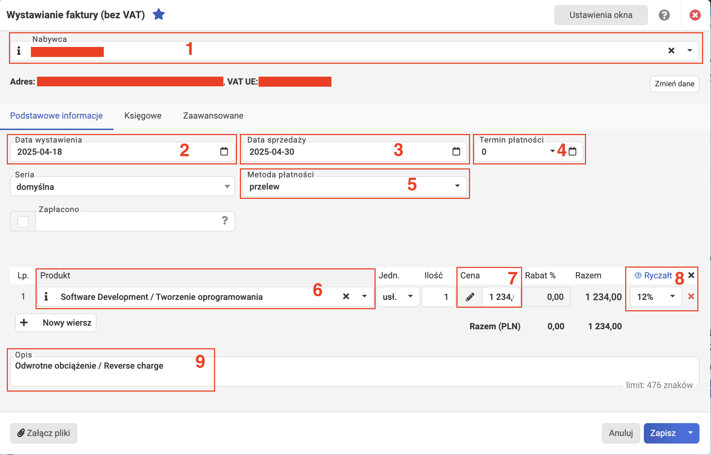
Księgowe¶
(Бухгалтерия)
-
Schemat księgowy - Выберите схему бухгалтерского учёта, которая зависит от того, кому и в какую страну вы предоставляете услугу.
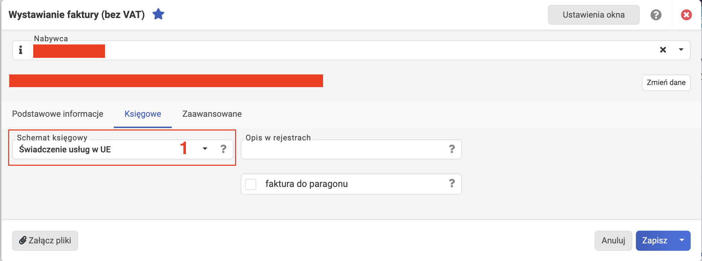
Например, нужно выбрать "Świadczenie usług w UE", если экспортируете услугу из art. 28b ustawy o VAT (например, информационные или маркетинговые услуги) юрлицу (компании) с офисом в другой стране ЕС (не Польша). А если экспортируете услугу юрлицу (компании) с офисом за пределами ЕС (например, США или Великобритания), то нужно выбрать "Świadczenie usług poza UE". В каждом случае wFirma сама добавит "Odwrotne obciążenie / Reverse charge" в печатную версию фактуры (перепроверяйте после сохранения):
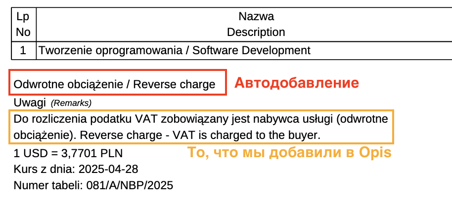
Zaawansowane¶
(Расширенные настройки)
-
Выберите валюту оплаты (Waluta).
Внимание
Если изменили валюту, убедитесь, что цена на вкладке Podstawowe informacje не конвертировалась - иначе исправьте.
-
Укажите счёт, на который должна быть произведена оплата (Rachunek).
- Можете выбрать язык фактуры (Język), например, польский-английский как на скриншоте.
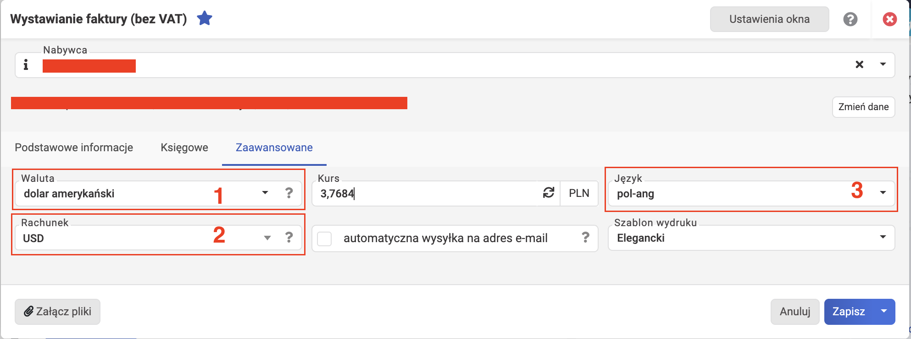
Нажимаем Zapisz, чтобы сохранить данные. Фактура сохранена!
Печать фактуры¶
В зависимости от настроек аккаунта и ваших действий на предыдущем шаге, новая фактура может существовать в статусе черновика. Теперь нам необходимо распечатать фактуру, чтобы она перешла в статус "подтверждённой" и точно была учтена в бухгалтерии wFirma. Также это можно сделать при выставлении фактуры, нажав Zapisz i drukuj.
- Идём в Przychody - Sprzedaż.
- Выбираем фактуру из таблицы.
- Нажимаем Drukuj.
- Нажимаем Dalej.
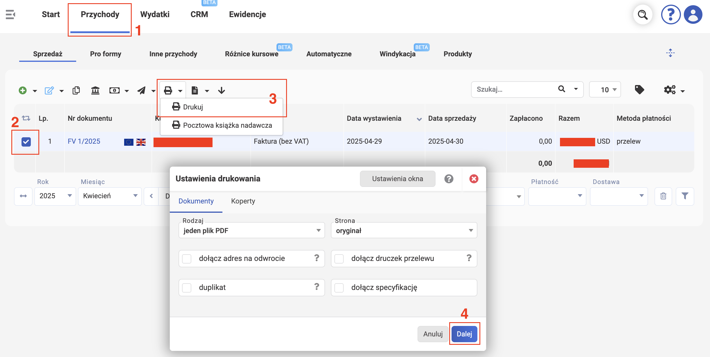
Файл фактуры загрузится — теперь его можно отправить клиенту. Файл желательно сохранить где-нибудь у себя.
Получение оплаты и учет курсовых разниц¶
Когда деньги пришли на счет, необходимо добавить приход платежа.
- Идём в Przychody - Sprzedaż.
- Выбираем фактуру из таблицы.
- Переходим на вкладку Płatności.
- Нажимаем Dodaj.
- Указываем дату поступления денег (Data płatności).
- В поле Metoda płatności выбираем тип оплаты - przelew.
- Указываем сумму (Kwota). Если по фактуре должны заплатить $1000, но из-за комиссий банков-посредников пришло на $10 меньше, то всё равно указываем полную сумму ($1000) для того, чтобы фактура значилась как "оплачена полностью".
- Нажимаем Zapisz.
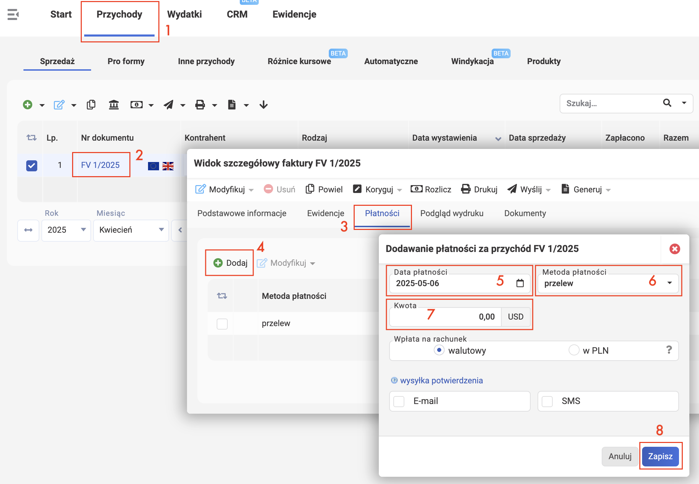
При получении оплаты в иностранной валюте могут возникать курсовые разницы. Закон предписывает учитывать курсовые разницы - как положительные, так и отрицательные.
Убедитесь, что у вас включена функция расчета курсовой разницы до того, как добавляете приход платежа.
После добавления прихода делаем следующее:
- Идём в Przychody - Różnice kursowe.
- Выбираем фактуру из таблицы.
- Нажимаем Wystaw DW (КР учитываются в бухгалтерии специальным документом "Dowód Wewnętrzny").
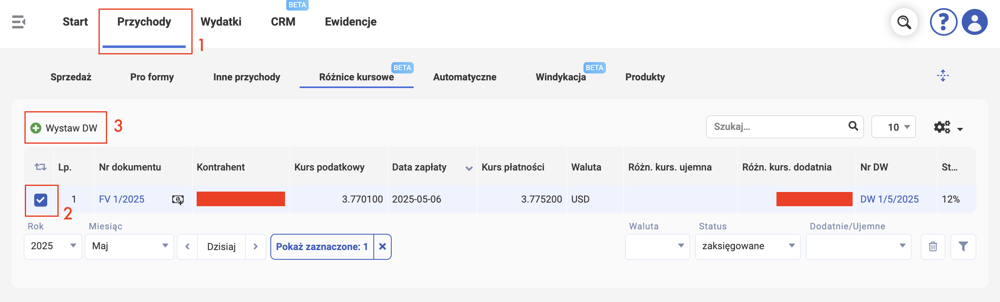
Всё, курсовая разница добавлена и будет учитываться при расчёте налоговой базы.
Вычисление и оплата налогов¶
PIT¶
-
На главной странице, если вы правильно настроили дашборд, у вас будет такая табличка. Нажимаем Wylicz. Также это можно сделать, перейдя на Start - Podatki и нажать Wylicz podatek.
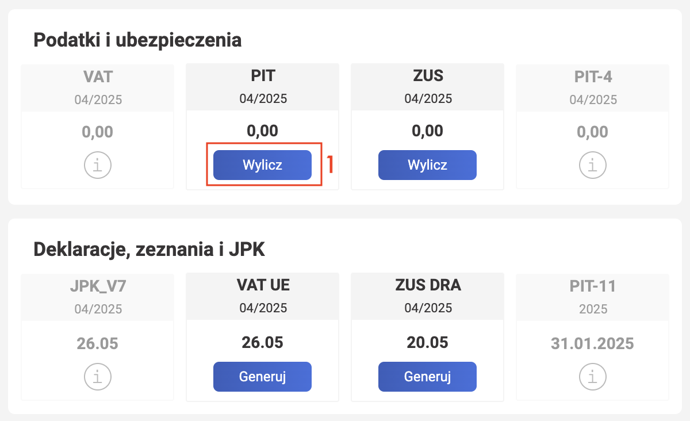
-
В мае платим за апрель. Поэтому на скриншоте в окошке Miesięczna zaliczka na podatek dochodowy выбран Okres как Miesiąc: Kwiecień и Rok: 2025. Выбираем предыдущий месяц и нажимаем Dalej.
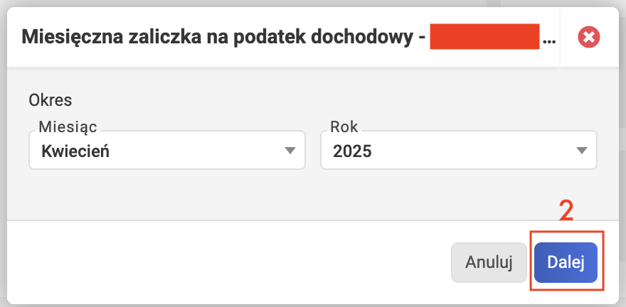
-
Здесь оставляем всё так, как есть:
- Stawka ryczałtu - в случае рычалта система примет для вычисления процент налога, указанный на фактурах.
- Składki społeczne do odliczenia od przychodu - Система отнимет 100% фактически уплаченных в предыдущем месяце взносов на социальное страхование в ZUS. Пока действует ульга на старт, вы в принципе освобождены от оплаты за соцстрахование, поэтому "Razem 0,00" как на скриншоте - это нормально.
- Składki zdrowotne do odliczenia od przychodu - Система отнимет 50% фактически уплаченных в предыдущем месяце взносов на медицинское страхование в ZUS. В первый раз вы увидите "Razem 0,00" - это нормально. Если в этом месяце вы заплатите 461.66 zł за медстрахование, то в следующем месяце ожидайте увидеть 230.83 zł в этом поле.
- Нажимаем Zapisz для сохранения.
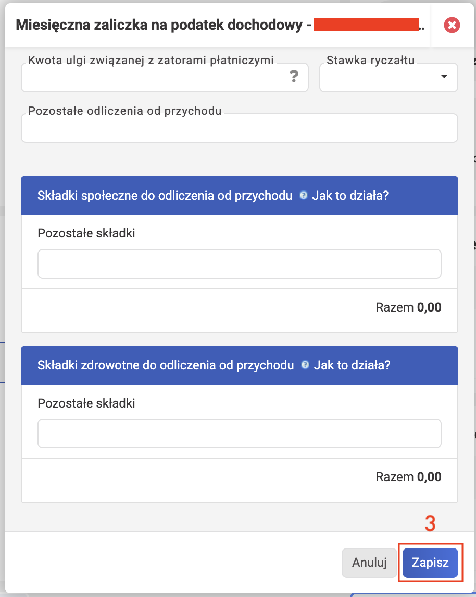
-
Если сумма соответствует вашим ожиданиям, то нажимаем Zapłać для оплаты. Срок оплаты: до 20 числа месяца, следующего за отчётным.
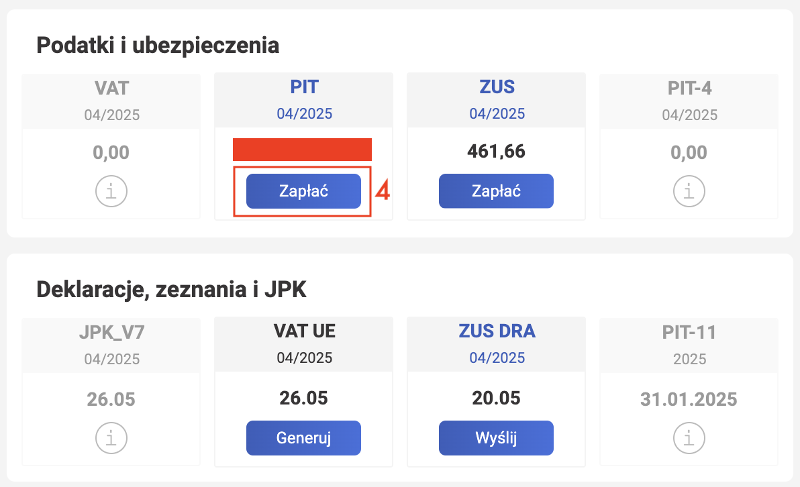
ZUS¶
-
На главной странице, если вы правильно настроили дашборд, у вас будет такая табличка. Нажимаем Wylicz. Также это можно сделать, перейдя на Start - ZUS и нажать Wylicz podatek.
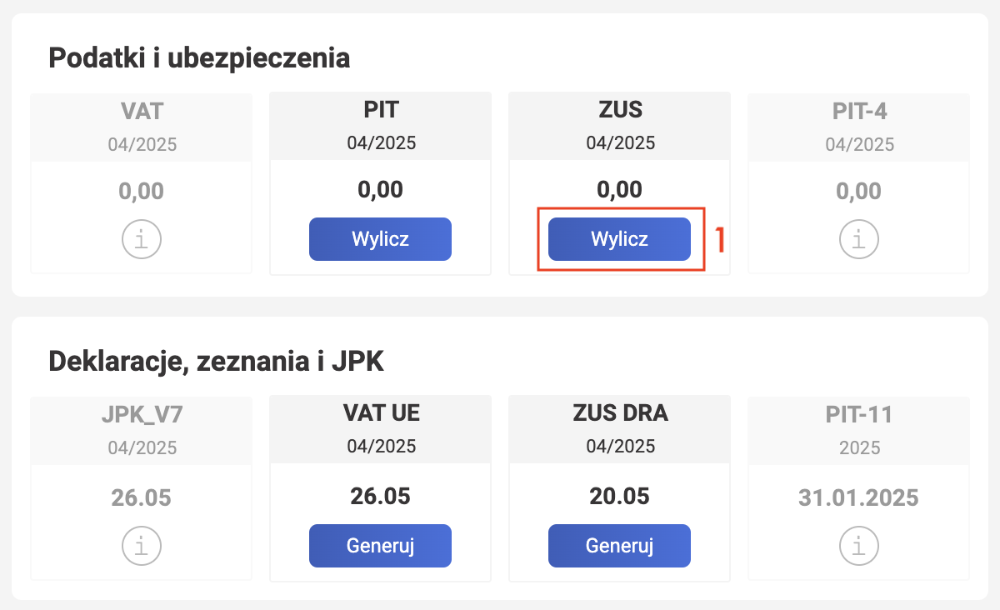
-
В окошке Dodawanie deklaracji ZUS DRA проверяем всё и нажимаем Zapisz.
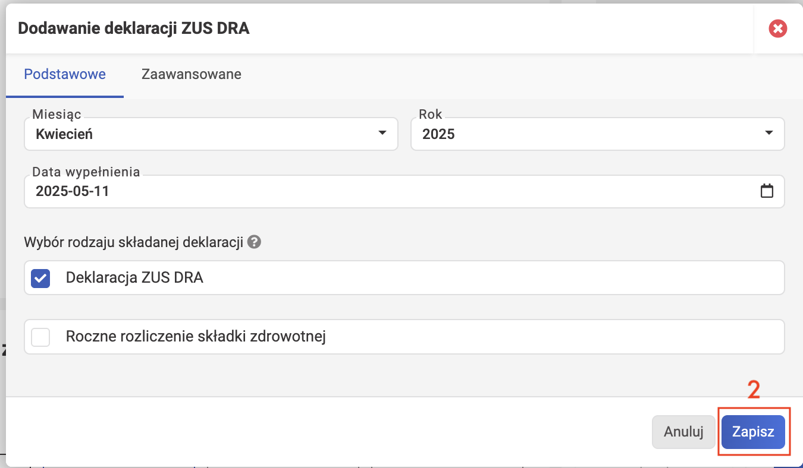
-
Если сумма соответствует вашим ожиданиям, то нажимаем Zapłać для оплаты. Срок оплаты: до 20 числа месяца, следующего за отчётным. На скриншоте получился ZUS = 461.66 zł. Ровно столько выходит к оплате в ZUS первый платёж для предпринимателей на рычалте, которые используют льготу Ulga na Start, в 2025 году.
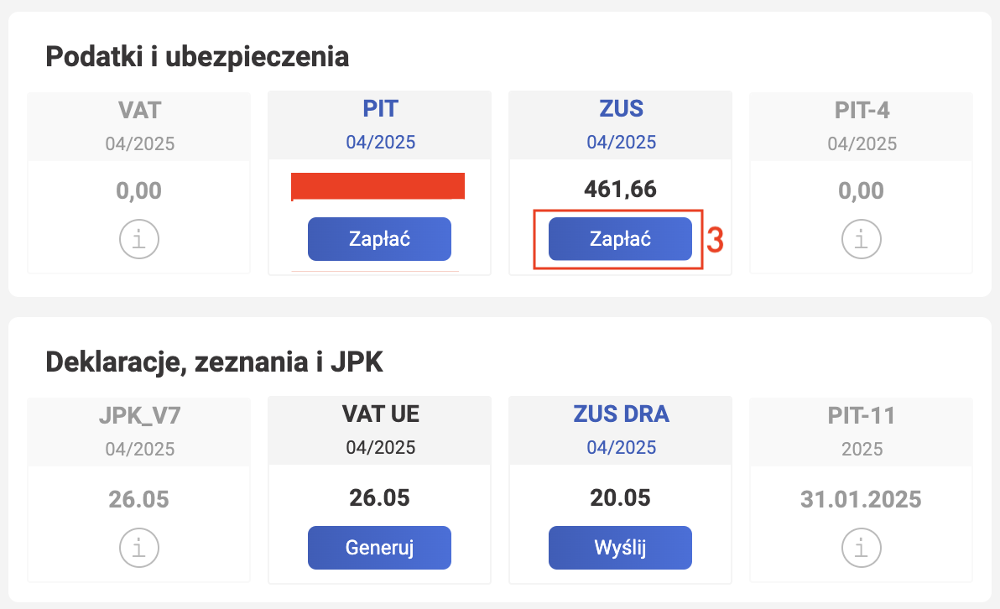
Отправка деклараций¶
VAT UE (VAT-UE, VAT EU, VAT-EU)¶
Если оказываете услугу лицу на территории ЕС, то обязаны иметь регистрацию VAT UE и отправлять ежемесячные декларации. А те, у кого не было клиентов из ЕС в прошлом месяце, могут смело пропустить этот раздел.
-
Нажимаем Generuj.
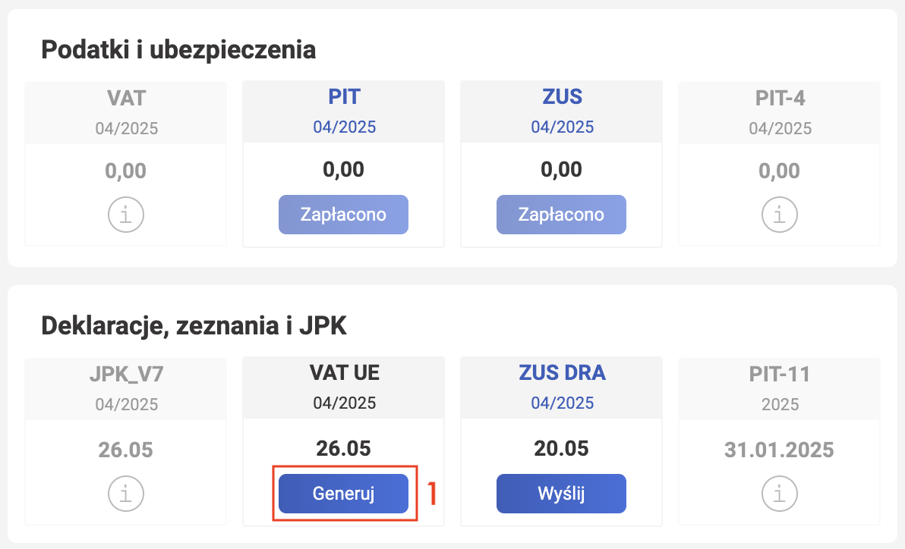
-
В мае отчитываемся за апрель. Поэтому на скриншоте в окошке Dodawanie informacji VAT-UE выбран Rok: 2025 и Miesiąc: Kwiecień. Проверяем, что выбрался предыдущий месяц и нажимаем Dalej.
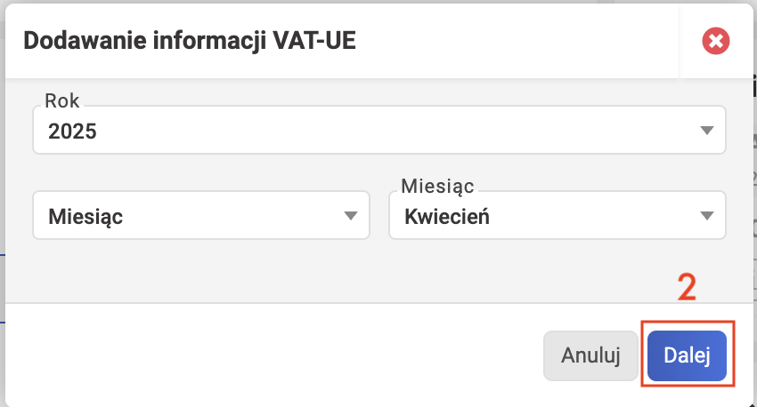
-
Нажимаем Wyślij.
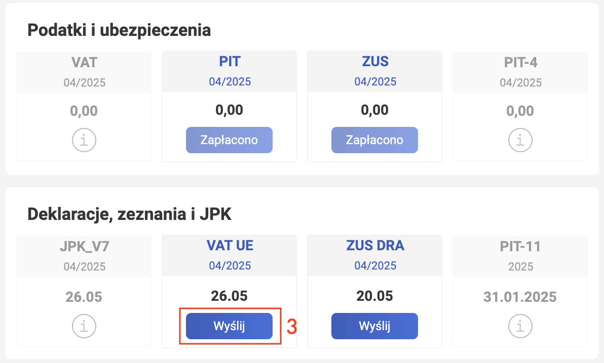
-
В окошке Wysyłanie deklaracji do urzędu skarbowego на вкладке "Bez podpisu" вводим свои личные данные и сумму дохода из прошлогодней декларации PIT.
0, если не подавали тогда декларацию. Нажимаем кнопку Wyślij do urzędu для отправки VAT UE в налоговую инспекцию.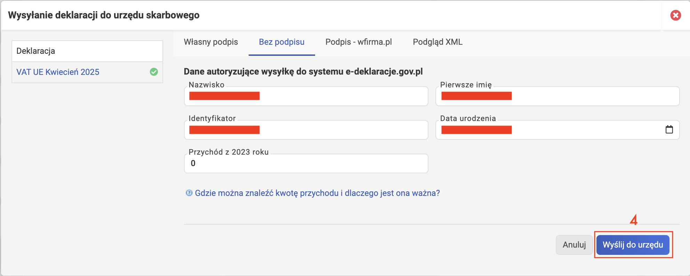
Пояснение к скриншоту: чтобы подписать VAT UE в 2025 году, мы должны найти тот PIT, который заполняли в 2024 году, т.е. доход в нём декларировали за 2023 год.
После отправки проверяйте статус. Перейдите в Start - Podatki - Podatek VAT. Если зеленый, то все ок, Ужонд получил вашу декларацию.
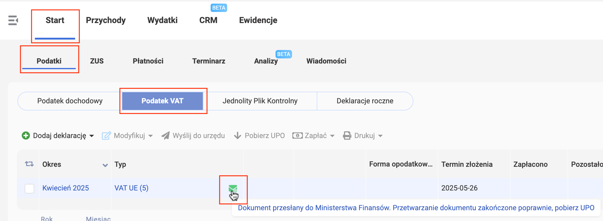
ZUS DRA¶
Чтобы отправить декларацию ZUS DRA из wfirma, сначала необходимо верифицировать профиль.
Info
Стоит отметить, что верификация не является обязательной. Wfirma предоставляет один год бесплатного использования при регистрации. Если вы не верифицируете профиль, то через год сможете зарегистрироваться заново и получить ещё один бесплатный год (разумеется, если такая акция всё ещё будет доступна). Стоит ли это усилий — решать вам. Однако в таком случае вам придётся самостоятельно скачивать файл ZUS DRA и загружать его на портал ZUS. Для этого в блоке "Deklaracje, zeznania i JPK" нажмите на "ZUS DRA", а в появившемся окне — на "Eksportuj deklarację ZUS". Скачанный XML-файл (zus_kedu.xml) затем импортируйте на портале ZUS, как описано в примере с infact, пункт 2.
После верификации профиля выполните следующие шаги:
-
Нажимаем Wyślij.
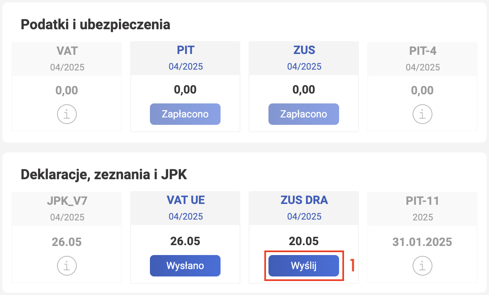
-
В окошке Wysyłanie deklaracji do ZUS на вкладке "Podpis - wfirma.pl" нажимаем кнопку Zleć do podpisu i wysyłki, чтобы передать ZUS DRA на подпись и отправку.
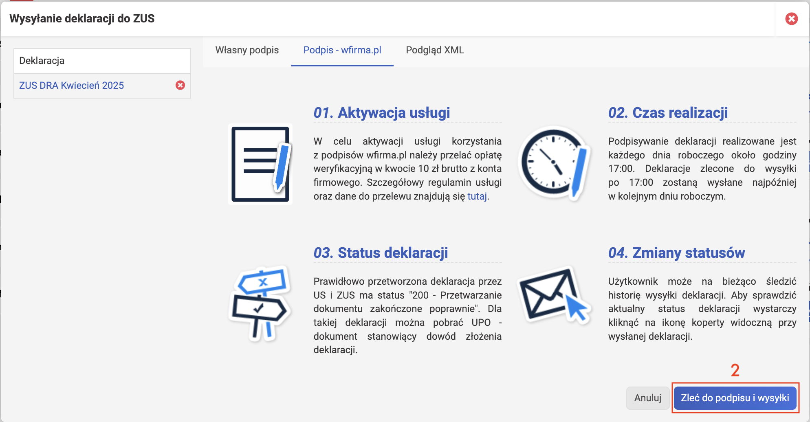
После отправки проверяйте статус. Перейдите в Start - ZUS - Deklaracje rozliczeniowe. Если зелёная иконка и статус "Przesyłka przyjęta do ZUS", то всё ок, ZUS принял декларацию.
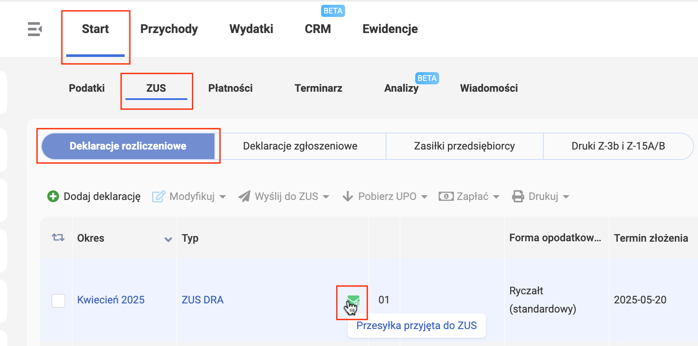
Это также можно проверить на портале ZUS в разделе ePlatnik - Dokumenty - Dokumenty w ZUS, однако запись может появиться там не сразу, а как минимум через несколько дней.
VAT¶
...
Курсовая разница от собственных средств (od środków własnych)¶
Если получаете оплату в валюте и продаете ее позже для расходов, связанных с предпринимательской деятельностью, например, для уплаты налогов, то также необходимо учесть курсовую разницу (КР) от собственных средств (środków własnych). Для рассчёта воспользуемся калькулятором и методом LIFO (метод FIFO или LIFO выбирайте себе сами).
- Нажимаем Przychody.
- Нажимаем Inne przychody.
- Нажимаем Dodaj inny przychód и выбираем Pozostałe przychody (DW).
-
В окошке Dodawanie nowego dowodu wewnętrznego на вкладке Podstawowe informacje заполняем Nazwa przychodu. Примерный текст для положительной КР:
Dodatnia różnica kursowa. Rozliczenie różnic kursowych od środków własnych, 100 USD, Data wpływu środków: 2025-05-06, Kurs wpływu środków: 3.775200 (085/A/NBP/2025), Data wypływu środków: 2025-05-12, Kurs wypływu środków: 3.812400 (faktyczny)
-
Указываем сумму.
- Нажимаем Zapisz i drukuj для сохранения и печати.
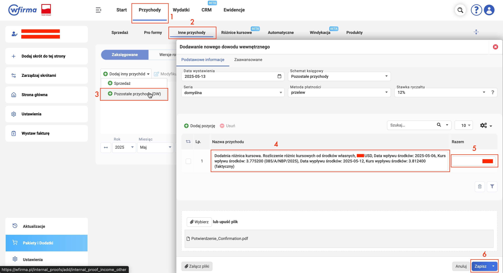
Все, курсовая разница добавлена и будет учитываться при расчете налоговой базы.